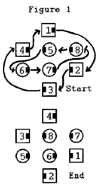
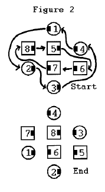

Starting formation - Quarter Tag.
The movement starts and ends in a Quarter Tag formation. Each dancer Circulates, or moves forward one position along the path shown in Figure 1. The movement may also be called when there is a left-hand wave in the center. In this case, the path circulated along is as shown in Figure 2.
It should be noted that the Circulate paths are independent of each other. Therefore, it is possible for only those on the outside path (dancers numbered 1, 2, 3, 4 in Figures 1 & 2) to Ping Pong Circulate or only those on the inside path (dancers numbered 5, 6, 7, & 8 in Figures 1 & 2) to Ping Pong Circulate.
 
STYLING: Styling is the same as previously described for the basics pass thru and partner trade. Dancers in center use basic ocean wave styling. Outside dancers join hands in couple handhold.
Timing: 6